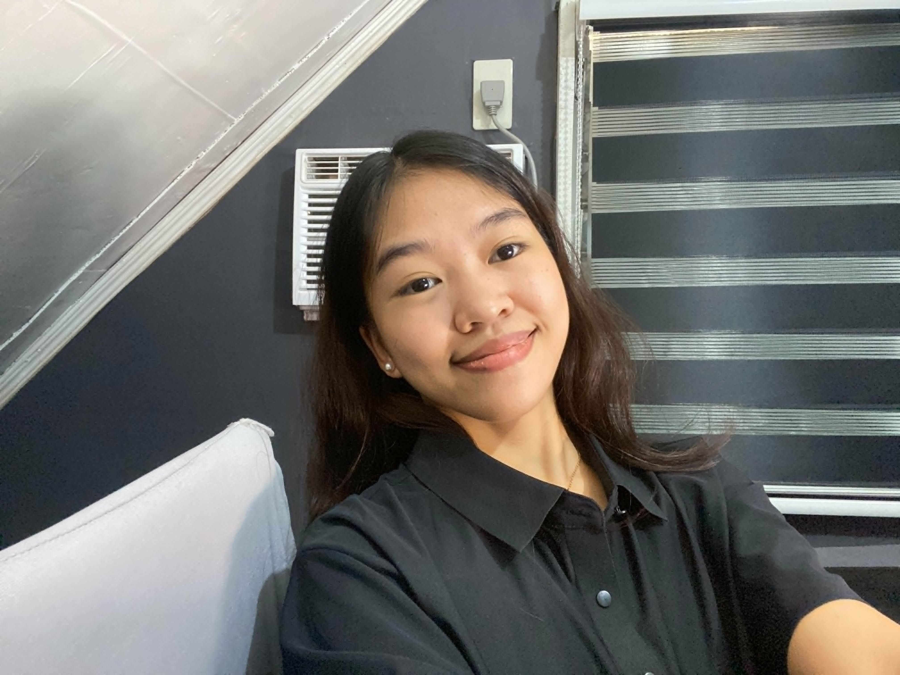

Crystal Sheen Abacajen
I am an Information Systems student interested in web development, design, and technology.
Junior Web Developer
Learn MoreAbout Me
I'm a fourth-year Information Systems student at Caraga State University. I got into web development because I like seeing an idea turn into something people can actually use. Outside of code, I take photos and make motion graphics, and both habits shape how I design.
Hobbies & Interests
- Photography: capturing portraits, events, and everyday moments
- Motion graphics: making static designs move
- Graphic design: layouts, visuals, and color
- Web development: building things I can actually click through
My Goals
- Improve my web development skills
- Build useful and creative websites
- Become a professional web developer
My Background
My degree taught me how systems work behind the scenes. My creative side taught me how they should feel on the front end. I'm learning to bring the two together.
Skills & Expertise
Web Dev
Websites and digital experiences.
UI/UX
Clean and user-focused interfaces.
Photography
Portraits, events, and visual stories.
Motion
Motion graphics and visual movement.
Graphic Design
Creative visuals and digital layouts.
Creative Direction
Ideas, concepts, and visual direction.